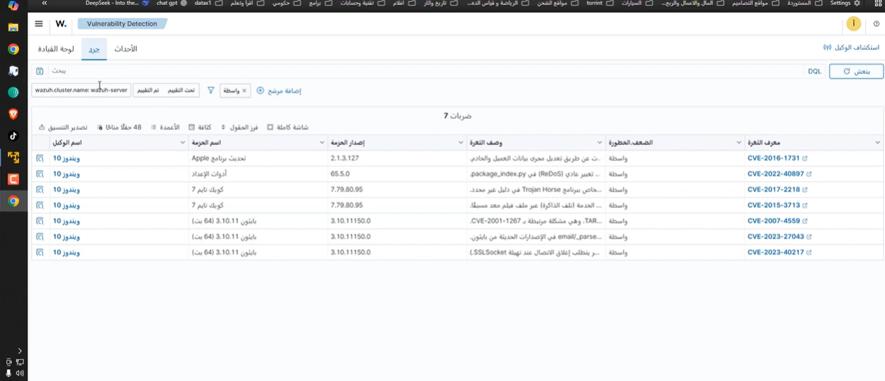
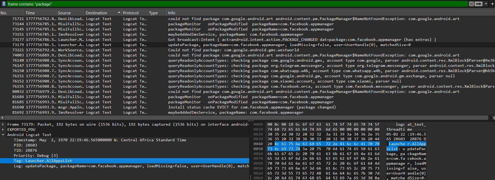
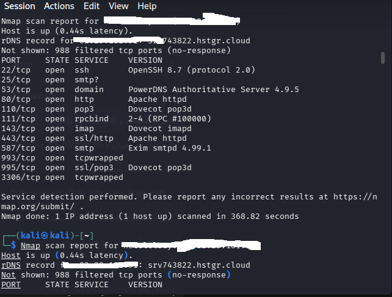
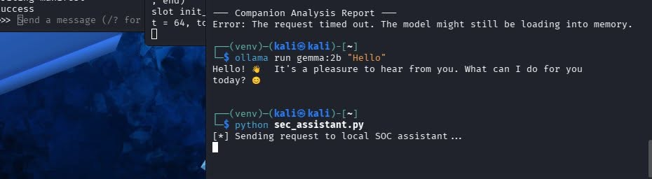

الأعمال والمختبرات العملية المنجزة
تطبيقات عملية ومشاريع ميدانية في إدارة المخاطر، تحليل حركة الشبكات، واكتشاف الثغرات الأمنية.

إدارة المخاطر ورصد النقاط الطرفية بـ Wazuh
بناء وتنصيب نظام Wazuh SIEM في بيئة افتراضية لمراقبة السجلات الأمنية وكشف التهديدات.

تحليل حركة الشبكة وفحص الحزم بـ Wireshark
تشريح حركة بيانات الشبكة، دراسة سلوك بروتوكولات الاتصال ورصد الأنشطة المشبوهة.

اكتشاف الثغرات الأمنية في موديم منزلي
تحليل ثغرات أجهزة التوجيه، فحص التكوين، وتأمين بروتوكولات الإدارة.

فحص واستكشاف خدمات الشبكة باستخدام Nmap
تحديد المنافذ المفتوحة، رصد إصدارات الخدمات، وتحليل البنية التحتية للهدف من بيئة Kali Linux.
AI SOC Copilot
Python / AI
أداة أتمتة محلية تراقب سجلات النظام الحية وتربطها بنموذج الذكاء الاصطناعي المحلي **Ollama (Gemma:2b)** للتحليل الفوري للتنبيهات الأمنية.
TryHackMe: SOC L1 Triage
SOC / Triageإتمام التدريب العملي لفرز وتحليل تنبيهات مركز عمليات الأمن السيبراني وتطبيق منهجيات تحديد الأولويات والتعامل مع التهديدات.
إلكترونيات الأنظمة المعقدة وحماية السيارات
خبرة عملية ميدانية في إصلاح اللوحات الإلكترونية والميكانيكية، تحليل شبكات الاتصال الداخلية للسيارات (CAN Bus)، وحمايتها.
إصلاح اللوحات الإلكترونية
تشخيص وإصلاح اللوحات الإلكترونية والميكانيكية المعقدة، فحص الدوائر المطبوعة (PCBs)، وتحديد الأعطال بدقة عالية بناءً على الخبرة الميدانية التقنية العميقة.
فحص بروتوكول CAN Bus & OBD2
البحث والتطوير في أمن السيارات، واختبار وتفتيش حزم بيانات ناقل التحكم (CAN bus)، وتوصيل مستشعرات OBD2 بالأجهزة الطرفية عبر وحدات Raspberry Pi.
أمن السيارات السيبراني (Automotive Security)
تحليل الثغرات الأمنية المحتملة في الأنظمة المدمجة للسيارات الذكية، تأمين قنوات الاتصال ضد هجمات حقن الرسائل (CAN Injection)، وحماية البنى التحتية للمركبات.
مسار دراسة أمن المركبات والأنظمة المعقدة
دروس مرتبة ومنهجية للدراسة والمراجعة التقنية مع دعم اللغتين (عربي / إنجليزي).
الدرس الأول: المفاهيم الأساسية والأمن السيبراني للمركبات
1. ناقلات الهجوم ونقاط الدخول
الطرق والمسارات المستغلة للوصول لوحدات التحكم (ECUs) مثل الواي فاي، منافذ OBD2، والثغرات البرمجية.
2. التهديدات والنتائج
تتراوح بين سرقة البيانات والسيطرة على الأنظمة الحرجة، مما يمس السلامة العامة.
3. نظام إدارة الأمن (CSMS)
إطار لضمان دمج تدابير الأمان طوال دورة حياة المركبة والامتثال للمعايير الدولية.
4. استراتيجيات الدفاع
عزل الأنظمة الحيوية، التشفير والمصادقة، وأنظمة كشف التسلل (IDS).
Lesson 1: Core Concepts & Automotive Cybersecurity
1. Attack Vectors & Entry Points
Paths like wireless access, physical OBD2 ports, and software flaws to reach vehicle ECUs.
2. Threats & Consequences
Ranging from privacy breaches to critical operational control loss impacting safety.
3. CSMS Framework
Lifecycle governance ensuring threat mitigation and global standard compliance.
4. Defense Approaches
System isolation, payload encryption/authentication, and intrusion detection systems (IDS).
الدرس الثاني قيد تجهيز المحتوى
هذا المكان مخصص للدرس القادم.
الشهادات والاعتمادات التقنية
التوثيق الرسمي للشهادات المهنية المعتمدة في الأمن السيبراني والشبكات.

Google Cybersecurity
الشهادة الاحترافية المعتمدة • 2026

Cisco Networking Basics
أكاديمية سيسكو للشبكات • 2026

OPSWAT Academy ICIP
حماية البنى التحتية الحرجة • 2026

TryHackMe SOC Level 1
فرز وتحليل تنبيهات الأمان • 2026
محمد ياسين بوشطر
Cybersecurity Analyst & SOC Specialist | Senior Technician
الملخص المهني (Professional Summary)
محلل أمن سيبراني واختصاصي حماية شبكات بخبرة تقنية واسعة تمتد لعقد من الزمن (2015-2025) في صيانة الأنظمة الإلكترونية وتقنيات الرادار. حاصل على شهادة جوجل للأمان السيبراني واعتمادات متقدمة في أمن البنى التحتية الحرجة (OPSWAT ICIP) والشبكات.
مصادر وقنوات يوتيوب ومنصات التعلم للأمن السيبراني
أبرز القنوات والمرجعيات التعليمية لتطوير المهارات الميدانية والتحليل الأمني.
NetworkChuck
شروحات رائعة في الشبكات، بايثون، والأمن السيبراني بطريقة عملية ممتعة.
John Hammond
تحليل البرمجيات الخبيثة، تحديات CTF، وأدوات الأمن السيبراني المتقدمة.
Professor Messer
دورات مجانية بالكامل لاختبارات أمان الشبكات وشهادات CompTIA الأمنية.
TryHackMe
منصة تدريب عملية لتطبيق سيناريوهات الهجوم والدفاع وفرز تنبيهات SOC.
Hack The Box
مختبرات متقدمة لاختبار الاختراق وتقييم الثغرات والتحقيق الرقمي.
Cisco Networking Academy
كورسات أساسيات الشبكات والأمن المعتمدة من شركة سيسكو العالمية.